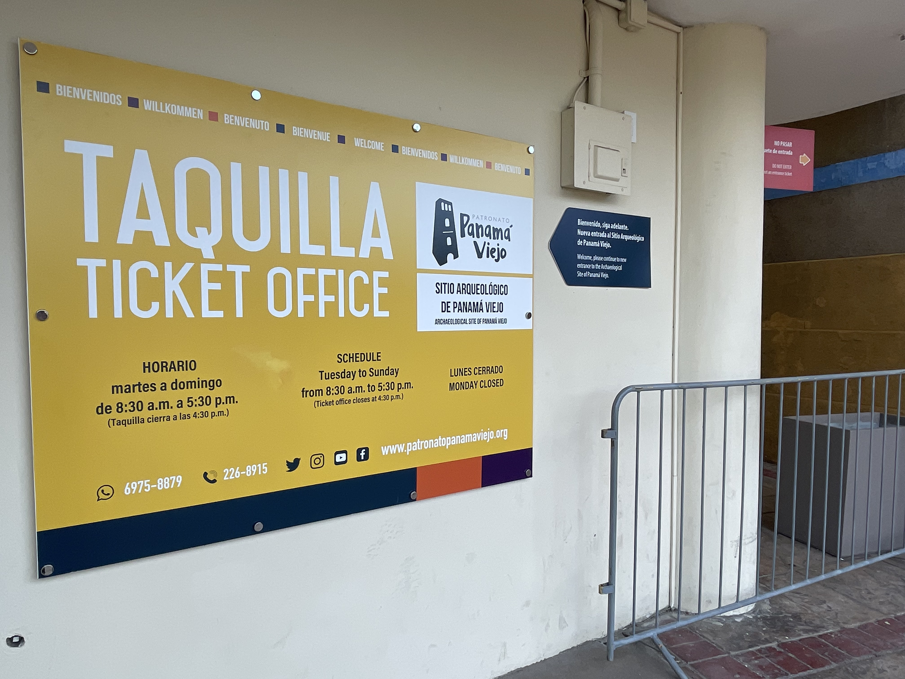
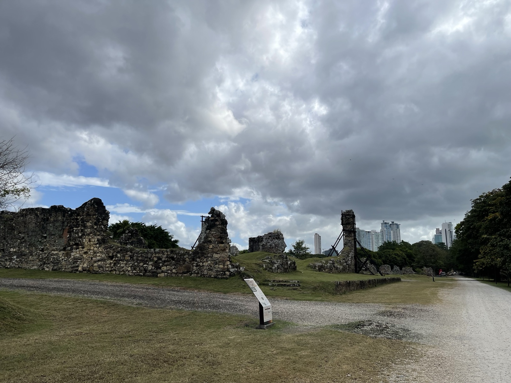
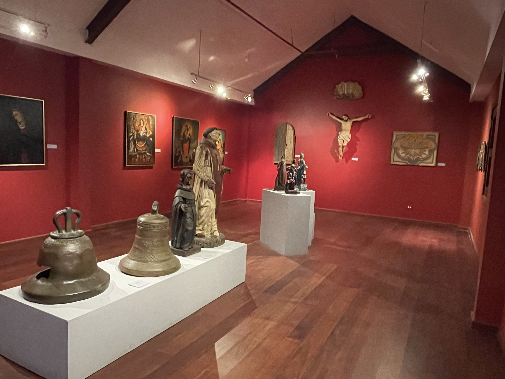
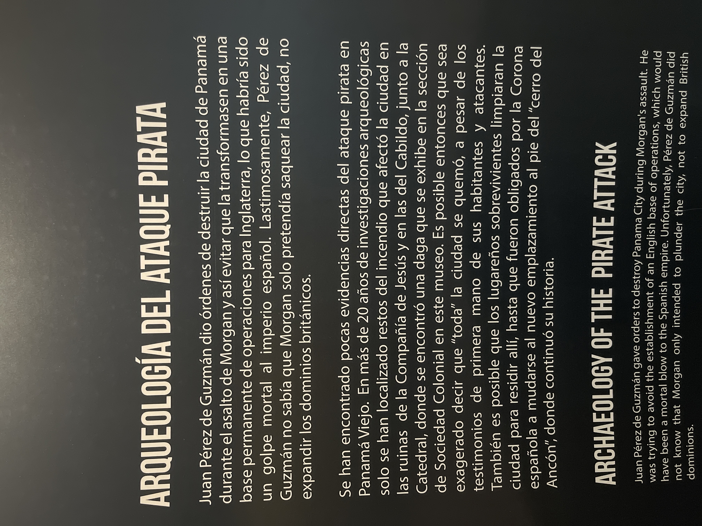

2025年1月、パナマシティへ来た。最初に向かったのはパナマ・ビエホ（Panamá Viejo）だった。市内の東側、太平洋に面した場所にある考古学遺跡で、1519年にスペイン人が建設した「最初のパナマシティ」の跡地だ。
パナマ・ビエホは、太平洋沿岸ではアメリカ大陸初の恒久的なヨーロッパ人入植地とされている。スペインの中南米支配の拠点として機能したが、1671年に海賊ヘンリー・モーガンの一団に略奪・焼き払われ、廃墟となった。現在のパナマシティ中心部（カスコビエホ）はその後に別の場所へ再建されたものだ。
チケット売り場と入場
入口の「Taquilla（チケット売り場）」でチケットを買う。運営は「Patronato Panamá Viejo」という財団が行っている。火〜日の8:30〜17:30が営業時間で、月曜は休館。非居住者の入場料は15〜17バルボア程度（バルボアはパナマの通貨で米ドルと等価）。

廃墟と高層ビルが視界に同時に入る
中に入ると、石造りの壁が残る廃墟が広がる。かつての大聖堂、修道院、市庁舎の跡地が点在し、整備された遊歩道が続いている。
驚かされるのは、廃墟の背後に現代のパナマシティのスカイラインが見えることだ。500年前の石積みの廃墟と、ガラス張りの超高層ビル群が同じ視界に収まる。ここから中南米への植民地化が始まったのかと思うと、妙なリアリティがある。


博物館 — 植民地時代と海賊の略奪
敷地内には博物館が併設されている。植民地時代の宗教芸術（鐘、聖人像、絵画、磔刑像）が展示された部屋と、発掘調査に基づく「海賊の略奪の考古学（Arqueología del Ataque Pirata）」展示が印象的だった。
略奪の展示には、「ヘンリー・モーガンが街を燃やした」という一般的なイメージは証拠が乏しく、むしろスペイン側が撤退の際に自ら火を放った可能性が高い、という内容が書かれていた。歴史の「常識」は単純ではないと思った。


パナマ・ビエホは「ただの廃墟」ではなかった。中南米の植民地化がここから始まり、ここで焼かれ、街が移った。廃墟の背後にそびえるビル群を見ながら、500年という時間をぼんやりと考えた。